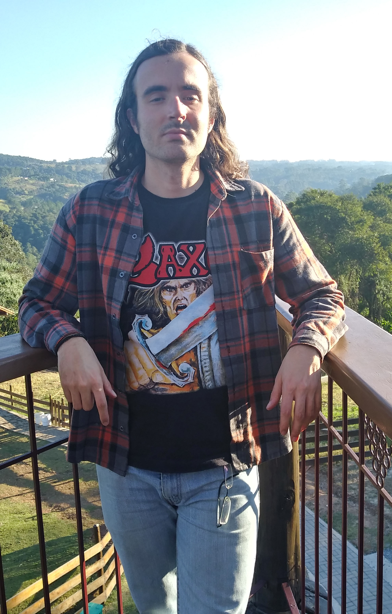

Na vida pessoal
É dificil se definir em poucas palavras, mas gosto de dizer que sou um apaixonado por música.
Estou sempre procurando por artistas que estimulem minha imaginação e causem aquele arrepio que sinto todas as vezes que descubro algo sonoramente apaixonante.
Este é um aspecto da minha personalidade.
Outro diz respeito à minha proximidade com a natureza, com o verde e o mar onde encontro paz, tranquilidade e conforto.
São nesses lugares que recarrego minhas energias e restauro meu equilibrio.
Na vida profissional

Há mais de 10 anos atrás, sonhava em poder ajudar as pessoas, conhecer suas histórias e fazê-las ganhar o mundo.
Tudo isso parecia uma realidade próxima de acontecer quando decidir começar minha graduação em jornalismo.
Ao longo destes últimso anos, realizei parte desse sonho e agora estou em busca de outro, de me tornar um profissional de tecnologia.
Para muitos, recomeçar do zero pode parecer uma escolha dificil, mas até este momento tenho buscado a motivação que preciso para vencer cada pequenno desafio no mundo da programação.
Entrar no curso de Sistemas para Internet é o primeiro passo de muitos que vou dar para me tornar um desenvolvedor Front-End.